I build working prototypes that help individuals and teams solve ambiguous healthcare and operational problems.
Each one tests an idea before a team commits real time and money.
![Jane Natividad]()
Jane Natividad
Healthcare Product & Strategy
What this work is built to demonstrate.
Product management, program and portfolio management, healthcare and medical insights, applied AI and analytics. Different labels for the same skill: taking an ambiguous problem and turning it into something that works.
Real prototypes, real workflows.
Every project here started with a real problem, one I ran into myself or watched a team wrestle with. I scoped each one small enough to build on my own, then generalised it so it stands on its own. Filter by area, open any card for the story behind it, and try the live demo.
Intake, Structured
ai-patient-intake-assistant
Turns a patient's own description of their symptoms into a clear, gap checked summary before a clinician reads it.
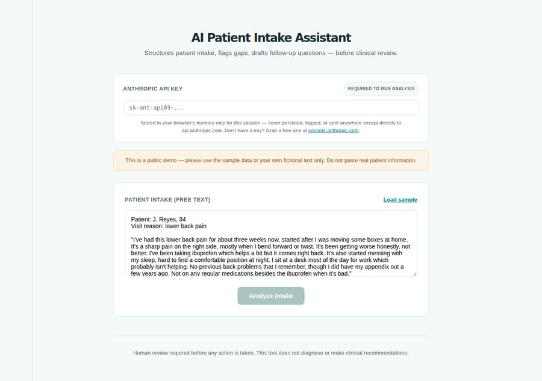
Read the storyShow less
Why I built it
Years in clinical research taught me one lesson over and over: decisions downstream are only as good as the information gathered at the start. Watching clinicians chase missing details on intake forms, I wondered how much of that checking could happen earlier, while leaving every clinical judgement with the clinician.
The problem
A patient's own account of their symptoms, collected by phone, portal or paper, is often incomplete or inconsistent. A nurse or doctor later pays for that gap in time, follow up calls and missed context.
What I built
A tool that structures free text intake, flags what's missing or contradictory, and drafts one follow up question for staff to review. It never diagnoses, and nothing is sent unless a person decides to send it.
Who it's for: Primary care and clinic intake teams who want patient reported information organised and checked before a clinician reviews it.
Key takeaway: Every output is a draft. A person always decides what happens next.
Before the Visit
visit-prep-copilot
Shows a physician what changed since the last visit, and what might need a second look.
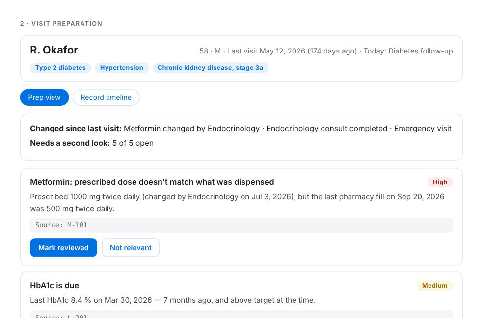
Read the storyShow less
Why I built it
This grew out of a primary care product I've been building. Talking with family physicians, I kept hearing how much time goes into reconstructing what happened since the last visit. This version runs on synthetic patients so anyone can try it in a browser.
The problem
Patients managing an ongoing condition can fall through the gaps between visits: a dose changed by a specialist that never matched what the pharmacy dispensed, or a referral that was sent and never closed.
What I built
A visit preparation view that reads a synthetic patient record and lists what changed, what may need attention and a few questions worth asking. Every flag shows the record entries it came from, and only the physician can mark it reviewed.
Who it's for: Family physicians who want to know what's changed before they walk into the room.
Key takeaway: It supports clinical review and leaves diagnosis and treatment to the physician. Every flag traces back to the record.
Evidence, Prioritized
evidence-prioritization-copilot
Ranks evidence requests across markets on six adjustable criteria, and every position can be traced.
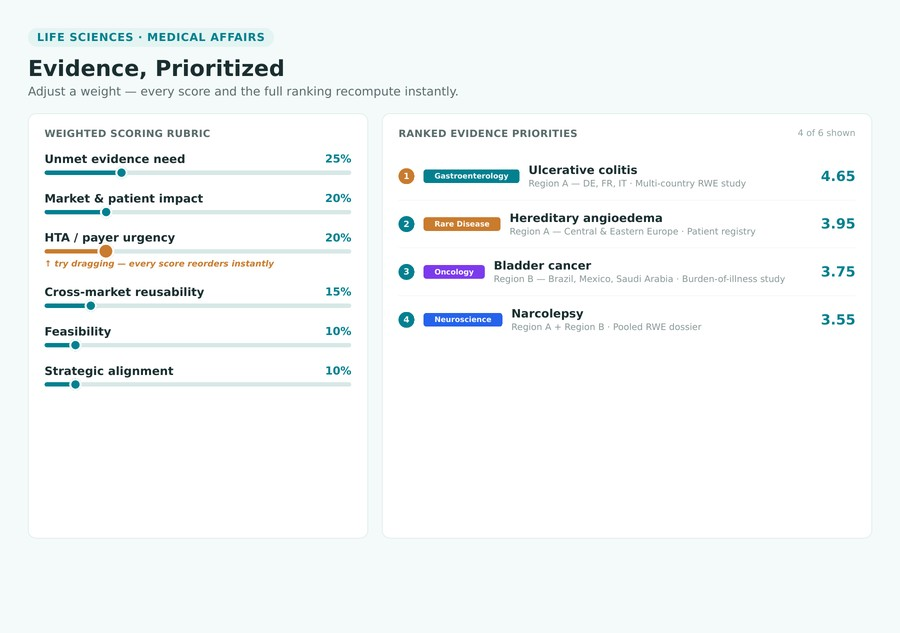
Read the storyShow less
Why I built it
I sat in enough planning meetings to notice a pattern: the evidence requests that got funded were often the ones argued most forcefully. I wanted something calmer, a ranking anyone could question by moving a weight and watching what happens.
The problem
Global medical teams receive requests for new studies, registries and real world data from dozens of countries, with no shared way to compare them. Funding often follows the loudest market rather than the strongest case.
What I built
A live scoring engine with six weighted criteria: size of the evidence gap, patients affected, payer and regulator urgency, reuse across markets, feasibility and strategic fit. Change any weight and the whole list re ranks instantly, with a plain explanation under each item.
Who it's for: Regional and international medical affairs, HEOR and evidence generation teams who need a defensible way to rank requests across markets.
Key takeaway: The ranking is simple arithmetic anyone can inspect, so every position can be explained in a sentence.
Search That Shows Its Work
governed-evidence-search
Searches trial protocols and shows its work at every step, with optional AI answers that cite their sources.
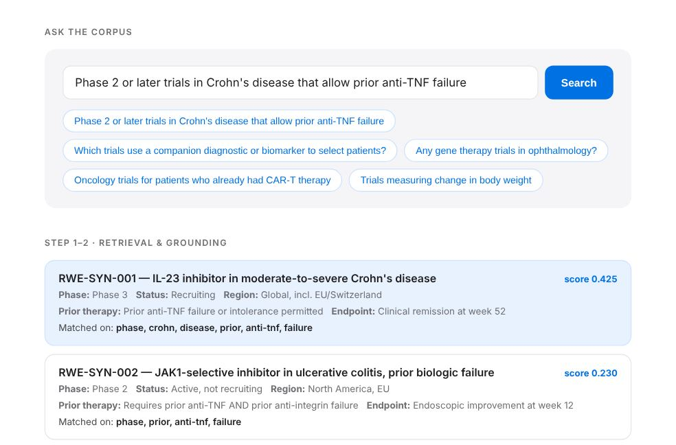
Read the storyShow less
Why I built it
Every AI search demo I saw skipped the part a regulated team cares about most: what was retrieved, and whether the answer actually used it. So I started from that end, built the scaffolding first, and made every step visible.
The problem
Most AI search demos hide the important part: what was retrieved, why, and whether the model actually used it. In a regulated setting, a tool nobody can audit is a tool nobody can trust.
What I built
A search tool over 12 made up trial protocols. It finds the best matches itself with no AI and no setup. If you add your own key, it writes a short answer using only those excerpts, cites a protocol for every statement, and shows exactly what the model was given.
Who it's for: Clinical development, medical affairs and real world evidence teams exploring how to use generative AI safely.
Key takeaway: The model is the easy, swappable part. The real work is everything around it.
Evidence to Claim
evidence-to-claim-builder
Drafts claims for clinicians, patients and payers from trial results, then pre checks them before review.
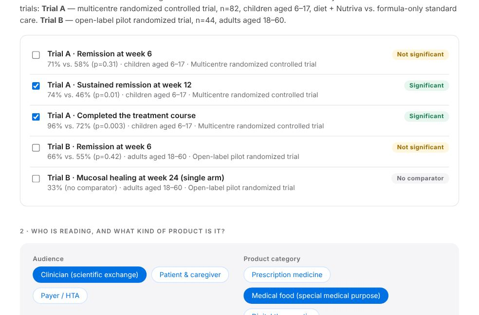
Read the storyShow less
Why I built it
While mapping a real nutrition therapy evidence base, I kept finding strong results phrased for the wrong reader. A statistic that suits a clinician can be off limits in patient materials. I wanted a tool that gets the first draft right for each audience.
The problem
Strong evidence still has to be written differently for a clinician, a patient and a payer, and what a product may say depends on what kind of product it is. First drafts that miss this waste reviewers' time.
What I built
Pick endpoints from two fictional trials, choose an audience and a product category, and get a drafted claim with a transparent pre check covering significance, comparators, study design, population, category rules, citations and overstatement.
Who it's for: Brand, medical affairs and medical communications teams preparing claims for review.
Key takeaway: The most honest reading of the evidence is usually narrower and stronger, and the tool shows which results truly support it.
One View of the Runway
portfolio-runway-instrument
One view of every R&D program against cash runway, with what if scenarios built in.
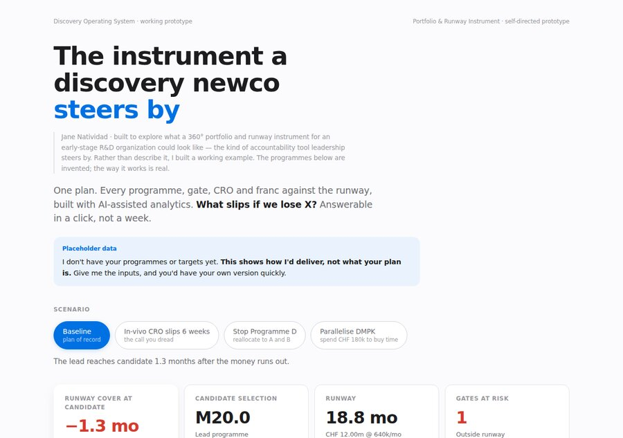
Read the storyShow less
Why I built it
In early stage biotech, one question keeps coming back: what happens to our runway if this program slips? I watched teams spend days rebuilding slides to answer it, and wanted the answer on screen in seconds.
The problem
Early stage R&D organisations run several competing programs against a fixed runway, but the information needed to test a decision is scattered across spreadsheets, contracts and people's memories.
What I built
A scenario tested dashboard showing every program, gate, CRO and budget against the runway, with pre built scenarios and a board ready summary.
Who it's for: Founders, R&D leads and portfolio leads at early stage biotech and life sciences companies.
Key takeaway: Its real value shows up under pressure, when you need to see what a decision does to the runway.
The Morning Brief
founder-briefing-copilot
Turns scattered status updates into a 30 second red, amber and green briefing.
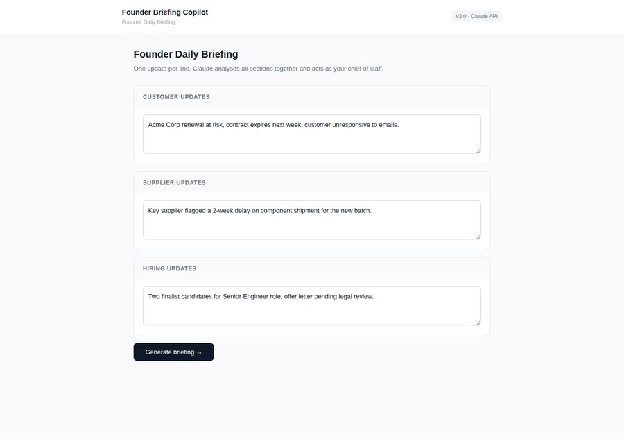
Read the storyShow less
Why I built it
Working alongside founders, I noticed how much of their morning went into piecing together updates from email and chat before they could decide anything. I wanted that to take thirty seconds, and to keep working even on days the AI is unavailable.
The problem
Founders and operations leaders at early stage companies spend a surprising amount of time stitching together updates from customers, suppliers and hiring just to answer one question: what needs my attention today?
What I built
A daily briefing tool that reads customer, supplier and hiring updates, flags risk with a rule based check, and adds an AI written narrative when you connect your own model.
Who it's for: Founders, operations leads and program leads juggling updates from many sources.
Key takeaway: A rule based fallback keeps it useful even when no AI is connected.
One Playbook, Many Markets
market-readiness-mapper
Finds the real launch bottleneck in each of 13 markets and suggests the order to launch in next.
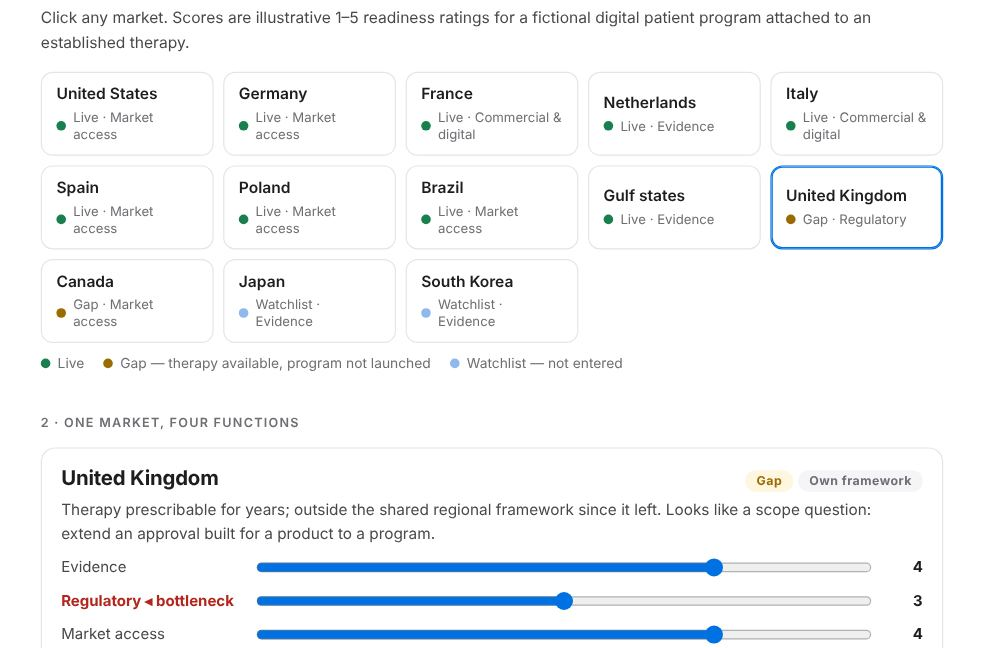
Read the storyShow less
Why I built it
While studying real multi market launches, one surprise stood out. The missing markets were rarely the hard to reach ones. They were mature markets that simply sat outside the regulatory framework the others shared. That made me want a way to find each market's real bottleneck.
The problem
Global often means one launch playbook copied market by market. Every launch runs through evidence, regulatory, market access and commercial execution, and which one is the bottleneck changes from place to place.
What I built
A market map scoring a fictional patient program across 13 markets and four functions. It names the weakest link in each market, explains what fixing it involves, ranks what to launch next, and flags live markets that may be launched but not yet adopted.
Who it's for: Global brand, market access and international business unit leaders deciding where to go next.
Key takeaway: A launch moves at the speed of its weakest function, so that's what the ranking looks at.
Where to Bet Next
portfolio-bet-prioritizer
Ranks R&D bets by leadership's priorities and shows how close the call really is.
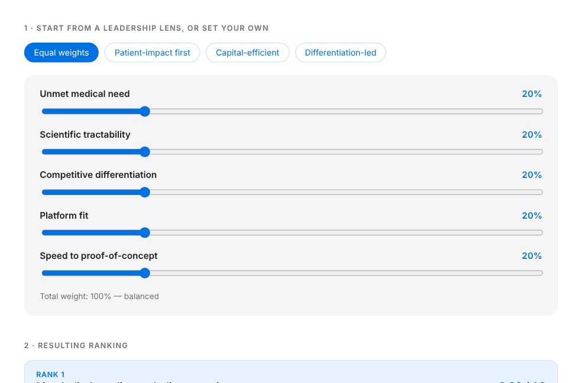
Read the storyShow less
Why I built it
I've watched portfolio meetings turn into a contest between programs. What helped every time was stepping back to agree what the organisation was trying to achieve. This tool puts that step first.
The problem
R&D leadership teams decide where the next discovery investment goes under competing priorities, and the discussion easily turns into 'my program versus yours'.
What I built
A live scoring tool for four research bets across five criteria: unmet need, scientific odds, competition, fit with existing strengths and speed to an answer. Pick a leadership lens or set your own weights, and it shows the smallest change in priorities that would put a different bet on top.
Who it's for: Portfolio strategy, R&D leadership and program leads who need a ranking people trust.
Key takeaway: If a one point change in priorities flips the ranking, the tool says so plainly, which is often the most useful thing to know.
Ready to Schedule
onboarding-ops-copilot
Turns a free text customer request into a scored onboarding plan and a drafted follow up email.
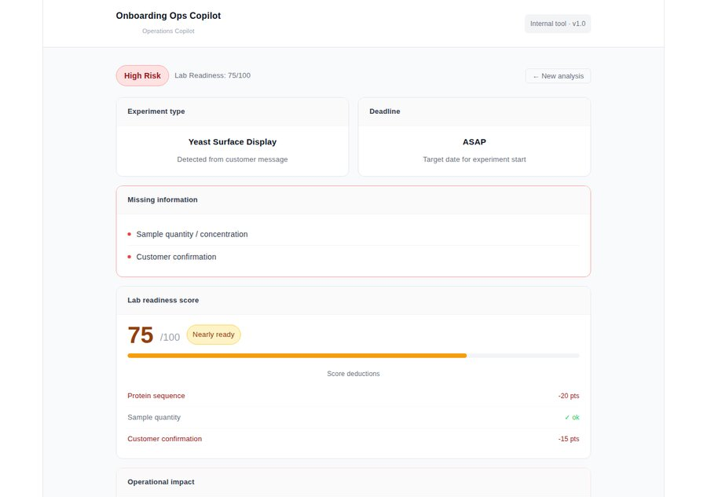
Read the storyShow less
Why I built it
I watched operations teams reread the same request emails again and again, hunting for the one detail that was missing. Spotting the gap was only half the job. The other half was writing back, so I built a tool that does both.
The problem
At a lab or contract research company, new project requests often arrive as a paragraph of email rather than a complete form. Someone has to reread each one to find the missing details before any work can be scheduled.
What I built
A tool that reads an unstructured request, scores how ready it is, lists what's missing, suggests what to do first and drafts the email needed to move forward.
Who it's for: Operations, lab and customer facing teams who receive requests as free form notes and want a consistent way to triage them.
Key takeaway: The time saving comes from closing the loop: the follow up email is already drafted.
Prep & Decide
pm-companion-copilot
Preps you for customer conversations and turns raw feedback into prioritized product decisions.
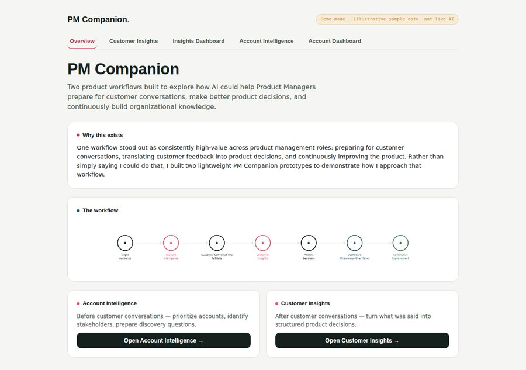
Read the storyShow less
Why I built it
As a product manager, the work I found most draining was the quiet synthesis: rereading old notes before a call, or sorting a pile of feedback into something a team could act on. I wanted to hand that first pass to a tool and keep my energy for the conversations.
The problem
A lot of product management is unglamorous synthesis: rereading old notes before a customer call, or turning a pile of feedback into a decision the team can act on.
What I built
Two focused workflows. One gathers context ahead of a customer conversation into a quick briefing. The other turns unstructured feedback into prioritized insights and action items.
Who it's for: Product managers who spend real time preparing for customer conversations and turning feedback into decisions.
Key takeaway: Preparing for a call and analysing feedback are different jobs, so each gets its own focused workflow.
Change, Tracked to Adoption
change-adoption-tracker
Follows a process change from impact to adoption, with a person approving every message.
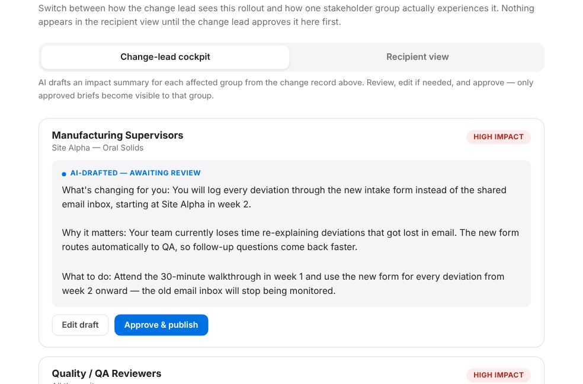
Read the storyShow less
Why I built it
Most change programs I've seen were well designed and still struggled, because people never quite heard what the change meant for them. I wanted to show careful translation at scale, with a person approving every message.
The problem
Deciding what a process change should be is the easy half. The hard half is telling each group what actually changes for them, and knowing honestly whether adoption is real or just reported.
What I built
A change lead's cockpit where each group's briefing is drafted from the change record, edited and approved before anyone sees it, plus a readiness view that flags groups needing support for a person to decide on.
Who it's for: Change, process excellence and transformation leaders running multi site rollouts.
Key takeaway: AI can help draft the message for each group. People decide when it's right and when adoption is real.
Funnel, Torn Down
funnel-teardown-workbench
Takes apart a digital health funnel, labelling every finding as observed, sourced or inferred.
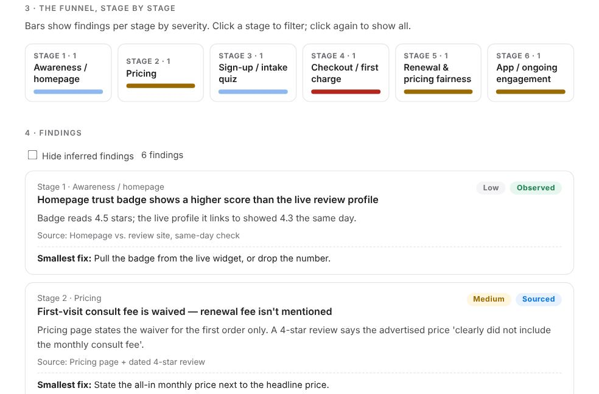
Read the storyShow less
Why I built it
I took apart several live telehealth funnels by hand, page by page and review by review. The hardest discipline was keeping track of what I'd actually seen versus what I was guessing, so I built that discipline into a reusable tool.
The problem
Most funnel reviews blur what you saw yourself, what a customer review says and what you're guessing, so the list of top issues mixes facts with hunches.
What I built
Two fictional funnels, one direct to consumer and one where clinicians control access, with a clear scope box, a stage by stage severity view, a way to log new findings and a prioritized summary that keeps guesses in a separate 'validate first' list. It exports to Markdown.
Who it's for: Product managers, growth leads and analysts reviewing a digital health product from public information.
Key takeaway: Confidence is part of every finding. Something you observed carries more weight than something you inferred.
Will We Hit Enrollment?
enrollment-forecaster
Simulates site start up and recruitment 2,000 times and shows the odds of hitting target by your deadline.
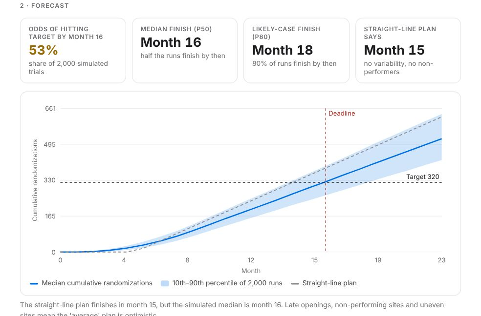
Read the storyShow less
Why I built it
Every enrollment plan I've seen starts as a straight line on a slide. Then sites open late, a few never recruit, and the date slips. I wanted the plan to come with honest odds from day one, and a quick way to test which fix is worth paying for.
The problem
Enrollment plans assume every site opens on time and recruits at the average rate. In reality some sites open late, some never recruit and performance varies widely, so the planned date often has far worse odds than anyone realises.
What I built
A Monte Carlo forecaster using the standard Poisson Gamma recruitment model. Set sites, activation timing, recruitment rate, site variability, non performing sites and screen failure, then see the odds of finishing on time, a range of outcomes, a rescue scenario side by side and which lever matters most.
Who it's for: Clinical operations, study start up and R&D program leaders who need to know how likely an enrollment plan really is.
Key takeaway: The headline is a probability. A plan that 'finishes in month 15' may only have even odds.
BioLab Simulator
biolab-simulator
Run simulated growth experiments on fictional strains, compare scenarios and see exactly why the curves differ.
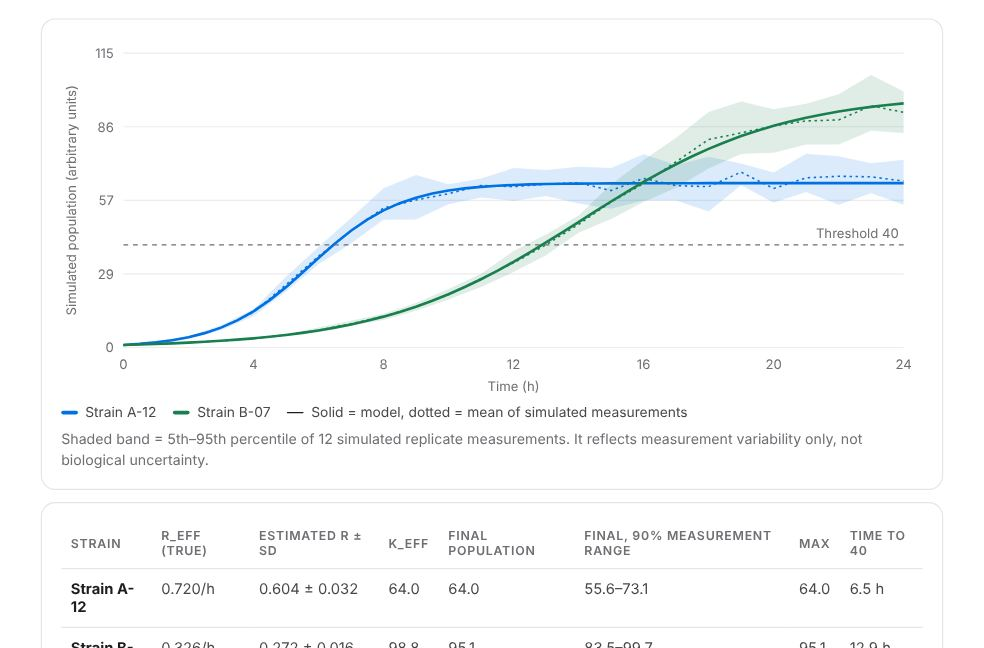
Read the storyShow less
Why I built it
Growth experiments blend three things: the organism, the conditions and the noise in measuring them. I wanted a bench where each can be changed on its own, so it's always clear why one curve ends up higher than another.
The problem
Experimental results blend biology, conditions and noise, so it's hard to tell which assumption made one strain look better, or whether a difference is real at all.
What I built
A virtual lab built on logistic growth, solved numerically, with clearly documented nutrient and environment effects and an optional mode for nutrient depletion and product formation. It includes simulated replicates, a baseline comparison that explains why results differ, five preset experiments, a run history and a two parameter explorer.
Who it's for: R&D, bioprocess and product teams, and anyone learning experimental design.
Key takeaway: The environment is a neutral index, replicate bands show measurement noise only, and the estimated growth rate sits beside the true one.
HEOR Scenario Lab
heor-scenario-lab
A transparent cost effectiveness model that shows which assumptions drive the result and what would make it flip.
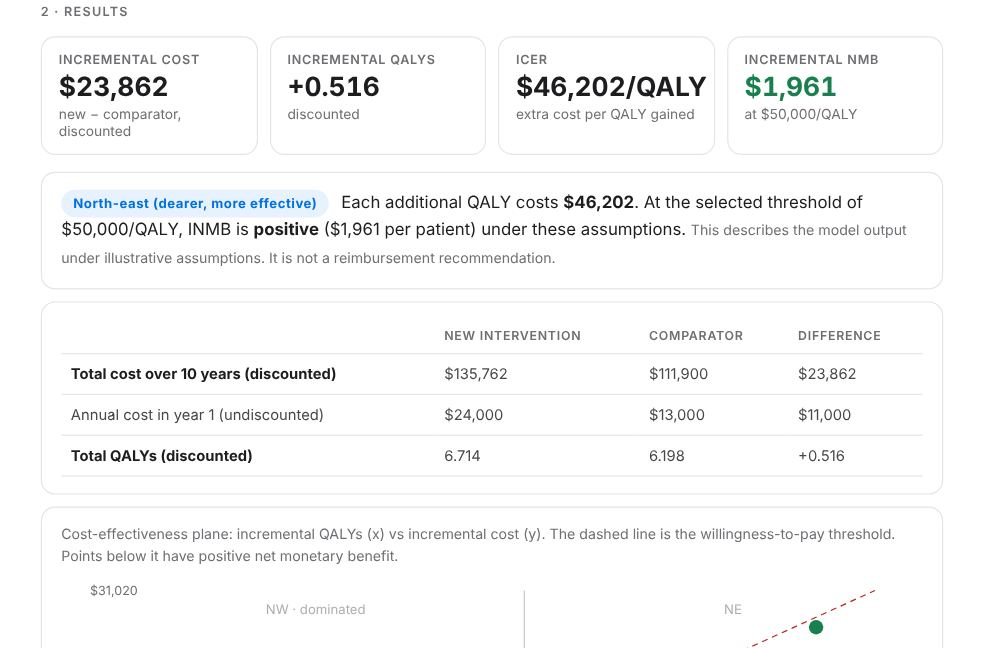
Read the storyShow less
Why I built it
In health economics discussions, a single ratio often ends up carrying the whole argument. I wanted the price or benefit needed to cross the threshold to be one glance away, and uncertainty to be shown openly.
The problem
Cost effectiveness results often get reduced to one ratio that can be undefined, can mean the opposite thing in a different quadrant, or can hide which assumption is doing the work.
What I built
A two strategy model using annual costs and quality of life, discounting and a willingness to pay threshold. It reports incremental cost, QALYs and net monetary benefit, shows the ratio only where it means something, and adds scenarios, a sensitivity chart with break even values and a 2,000 draw uncertainty analysis.
Who it's for: HEOR, market access, pricing and medical affairs teams.
Key takeaway: Net monetary benefit leads, every quadrant is handled properly, and results describe the model rather than a reimbursement decision.